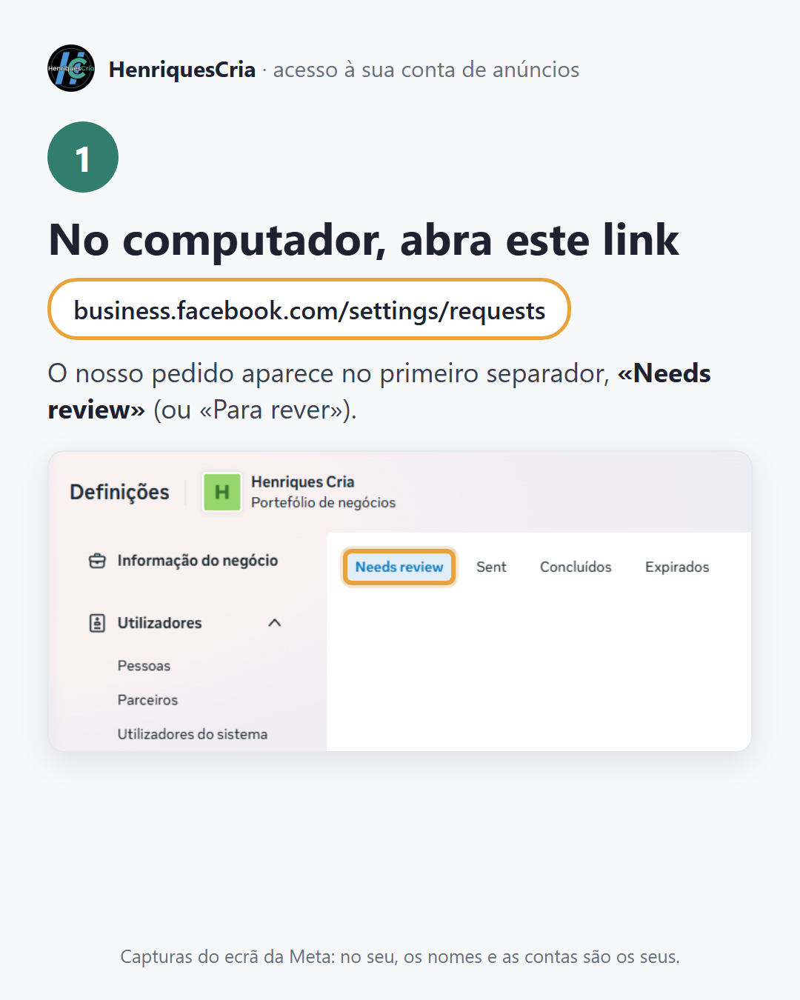
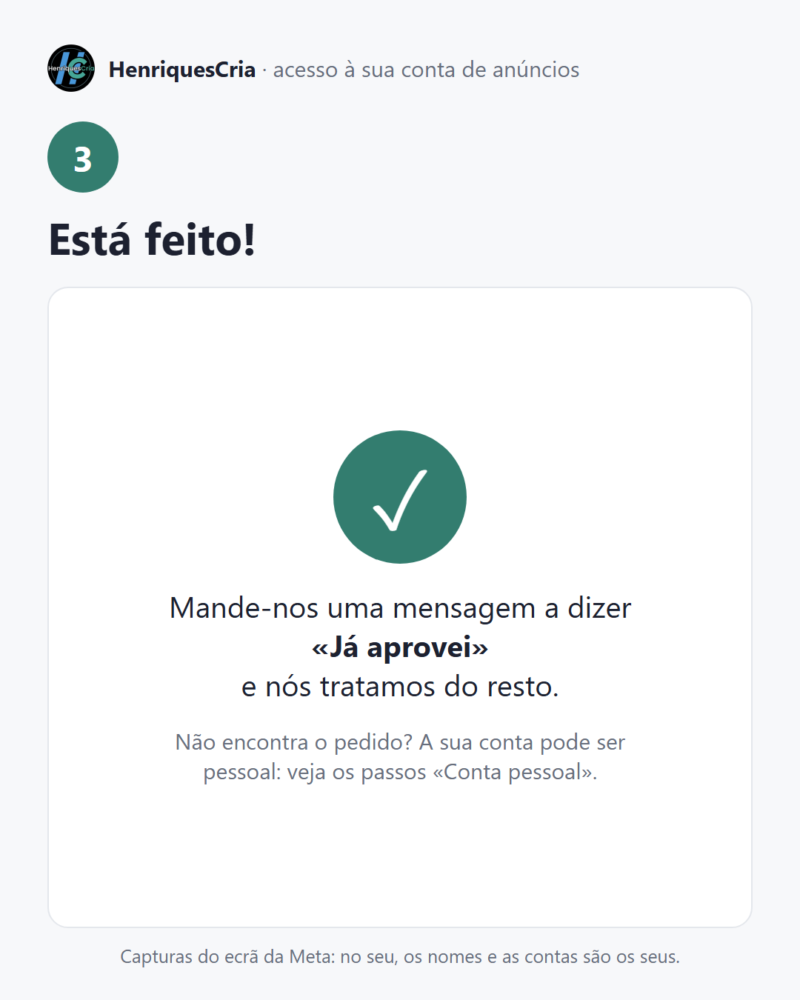
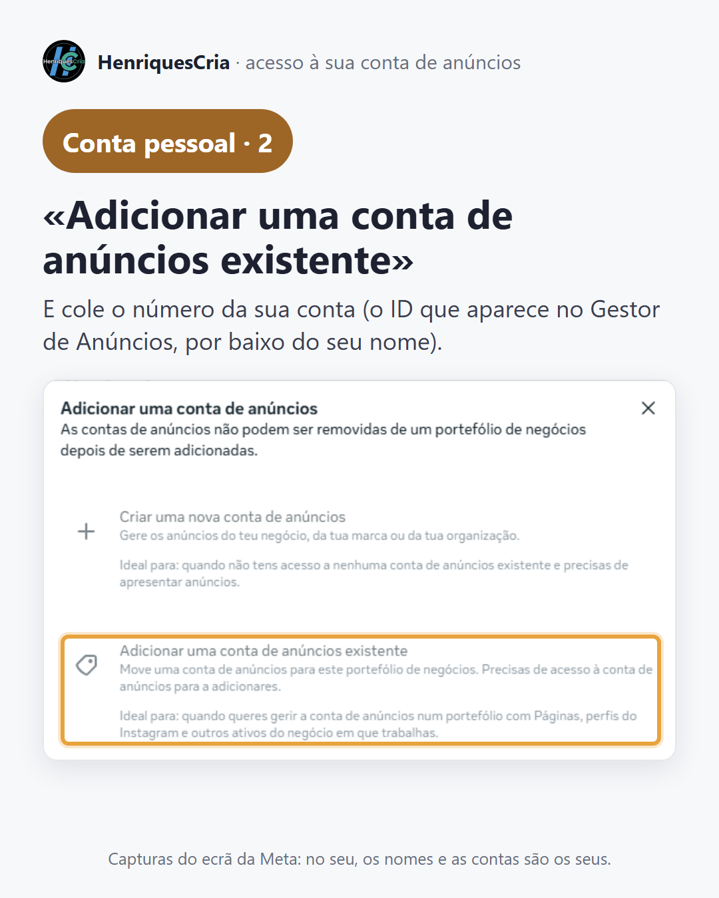
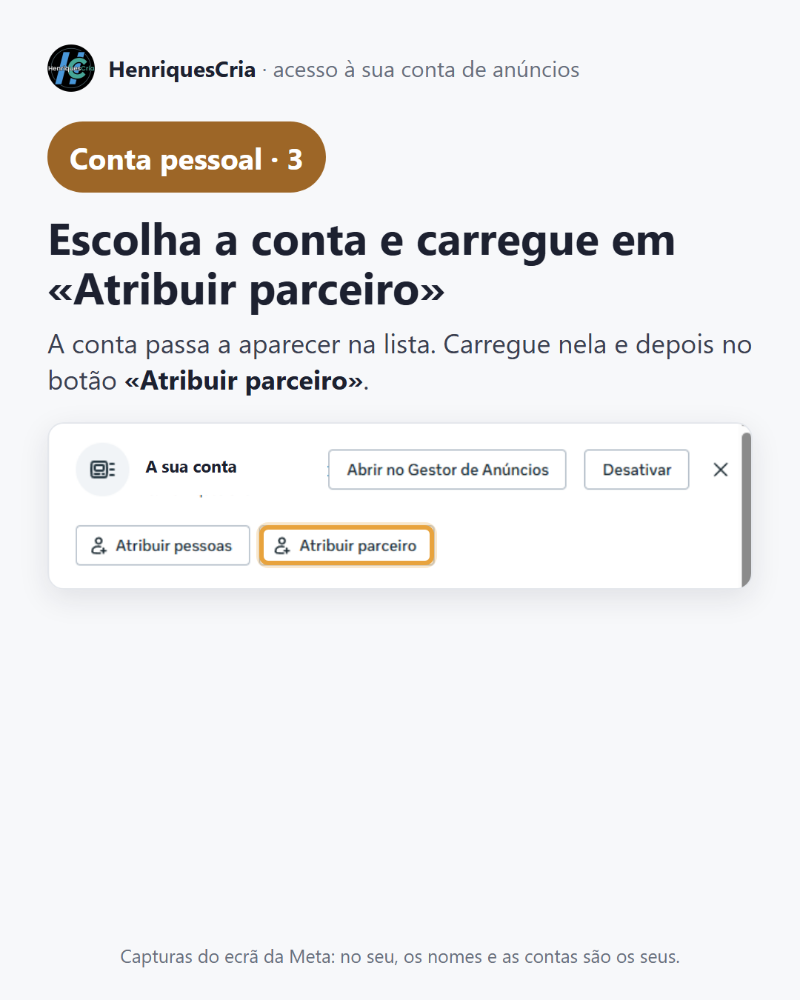
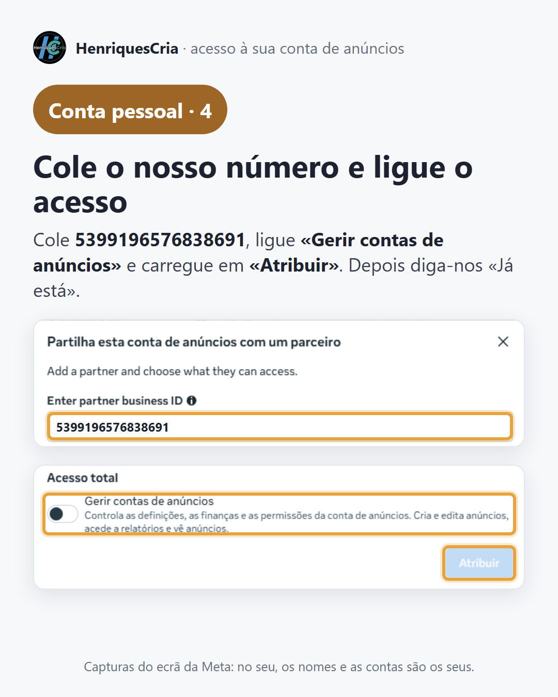

Dar-nos acesso à sua conta de anúncios
Enviámos-lhe um pedido para gerirmos os anúncios na sua conta. São três passos, no computador (no telemóvel a Meta esconde esta parte).
Aceitar o pedido


Não encontra o pedido?
A sua conta de anúncios pode estar só no seu perfil e não no negócio da sua Página. Nesse caso, siga estes quatro passos: põe a conta no seu negócio e dá-nos o acesso diretamente, sem precisar do pedido.



Qualquer dúvida, mande-nos uma captura do ecrã pelo WhatsApp: é a forma mais rápida de resolver.